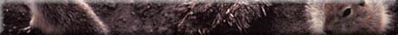
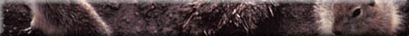
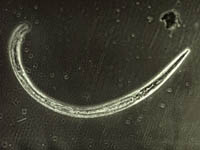
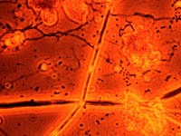

|
 

|
 Nematodes Nematodes or round worms small but numerous in the soil environment. They are extremely thin, and range in length from 0.5 to 1.5 mm. Yet there are may be as many as 30 million in one cubic metre or a grocery cart full of soil; and, ninety percent are likely found in the top five centimetres. Grab a magnifying glass and see if you can find these tiny worms! Nematodes feed on other nematodes, fungi, protozoa, bacteria, dead material, and a few living plants. They contribute organic matter to the soil. Certain nematodes are dangerous to animals and complete their life cycle as a parasite in the animal's body. Some females can reproduce without the aid of males. Certain nematodes (e.g Heterodera) can cause great damage to crops by boring into roots, causing stunting and injury, which make the plant more susceptible to other diseases. certain crops such as canola have root exudates which can kill nematodes so that crop rotations are one method of control. | |
 Protozoa These are single celled organisms that are mobile and we often see them surrounding their prey ( usually a bacteria) and absorbing it into its body. they belong to their own kingdom Protista and are strictly not animals. They are much larger than bacteria (5-100 µm) and are very abundant in well drained surface soils. There are some 250 different species in soils and can account for several hundred kg of live weight per ha. They are important in the food web as predators of bacteria and prey for nematodes. They also play a role in nutrient cycling by decomposing soil organic matter or releasing nutrients as they eat bacteria.
| |
|
|